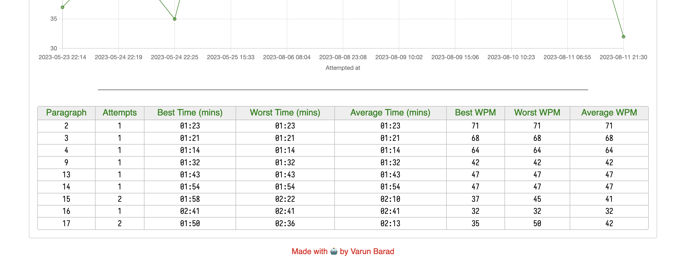

Apart from the graph I added last time I also wanted people to have a table where they can see their performance. Initially I was going to present the top 10 performance according to words-per-minute show up in the table. Something like a leaderboard.
But as I was writing the code, GitHub Copilot autofilled for me the code of a table which shows a summary of user's performance on each paragraph. I liked the idea and went with it. Wrote a bit of CSS to make the table have rounded corners and other such touch-ups.
For each different paragraph that you have typed in, you can now see the following data-points:
- Paragraph number
- Number of attempts you have made
- Your best, worst and average time in minutes
- Your best, worst and average speed in words-per-minute
The website looks usably nice on a laptop and desktop, it has all the functionalities that I wanted it to have. Now I declare this project as finished. I won't make any new changes to it unless to fix a bug. This declaration is primarily for me to stop myself from spending any more time thinking about this üòÖ.

Articles on this project
- Public release
- Adding stats chart
- Adding summary stats table (this article)